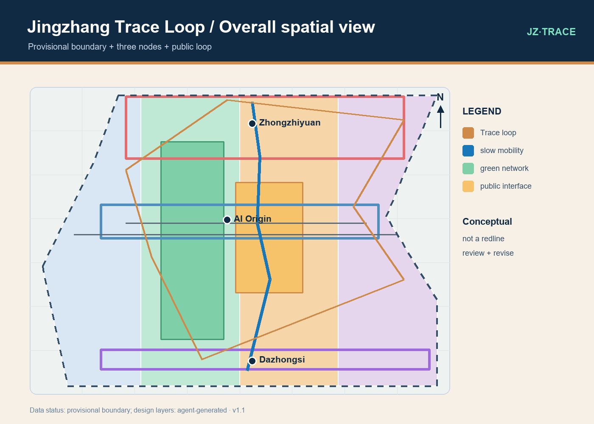
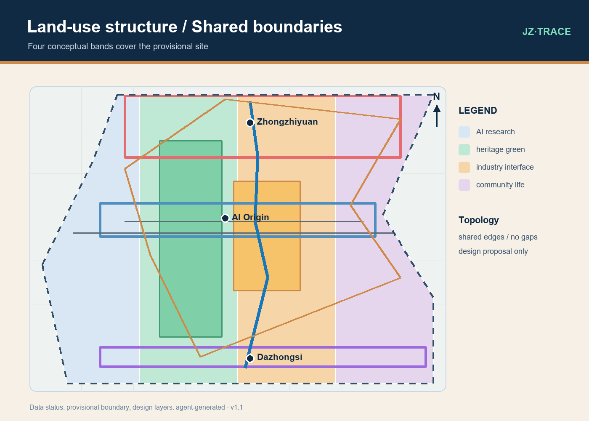
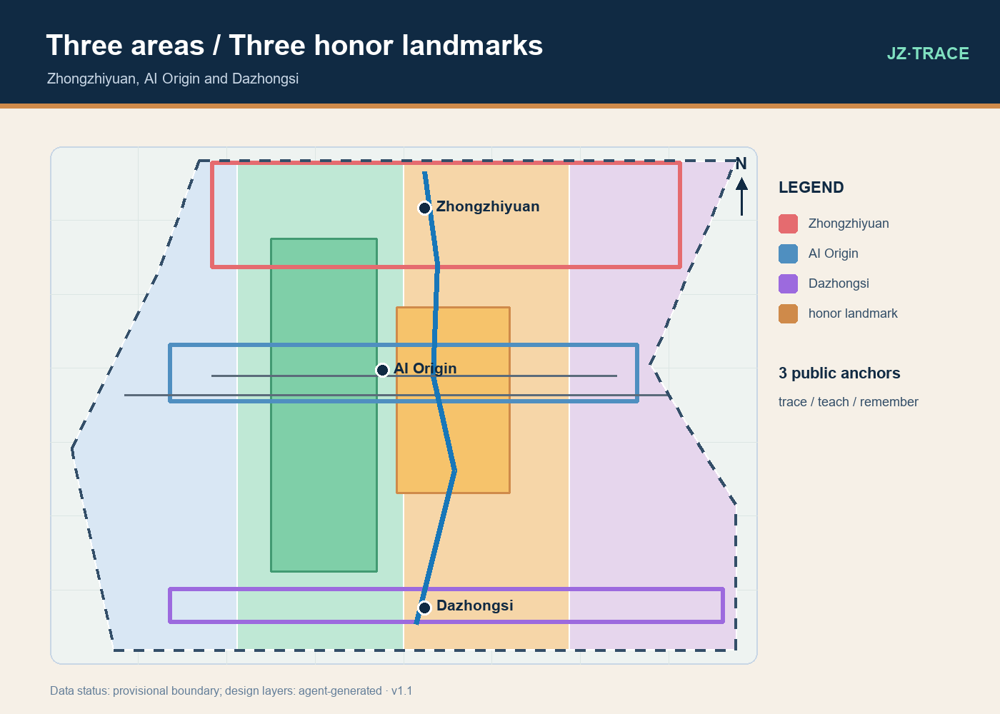
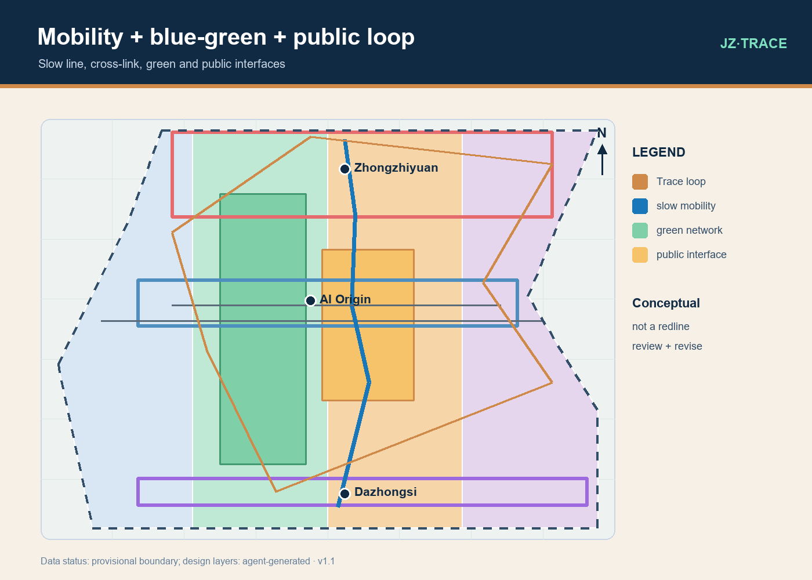
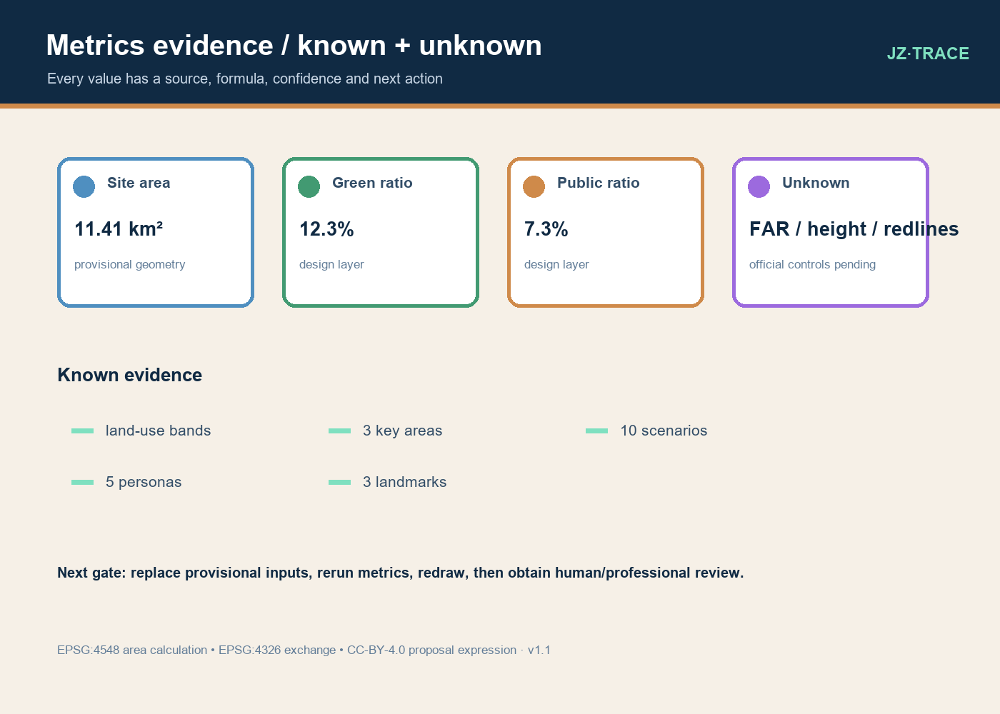

JZ·TRACE LOOP / Local static visual • English counterpart
Jingzhang Trace Loop
A verifiable AI innovation commons for heritage, research and daily life

One public loop, three nodes, two wings and a human-review gate at every step.
Coverage index
Overview map · Three-level scope · Land-use zoning · Slow mobility · Blue-green public space · Buildings · Renewal projects · AI scenarios · Core metrics · Task coverage · Self-check status · Assumptions
Scope
43.6 km² coordinated research context; 11.4 km² announced overall-design context; three key areas. Geometry is provisional where official polygons are unavailable.
Spatial proposition
A memory line, public cross-links, low-disturbance renewal and three explainable AI commons make the innovation belt legible without claiming a statutory plan.
Key areas
Zhongzhiyuan is an explainable compute garden; AI Origin is a near-campus origin commons; Dazhongsi is an urban intelligence exchange.
AI+ scenarios
Ten scenario cards, three industry tests and five personas use minimum data, consent, human escalation, offline fallback and withdrawal.
Blue-green and access
Continuous green, public interfaces, device-free participation and accessible routes are design objectives. Site survey and professional review remain required.
Phasing
Phase 1 tests reversible public-loop prototypes; Phase 2 tests authorized interfaces; Phase 3 follows official data, professional review and public revision.
Risk and copyright
Conceptual geometry is not an approval, redline, ownership claim or construction promise. Self-drawn assets use CC-BY-4.0; source limits are preserved.
Evidence figures




Review rule
Every scenario must state source, consent, minimal data, human escalation, offline fallback and withdrawal. Every spatial layer states whether it is official, provisional or agent-generated.
Next gate
Replace provisional geometry with cleared official data, rerun EPSG:4548 metrics, redraw the package, then obtain human and professional review before any implementation discussion.